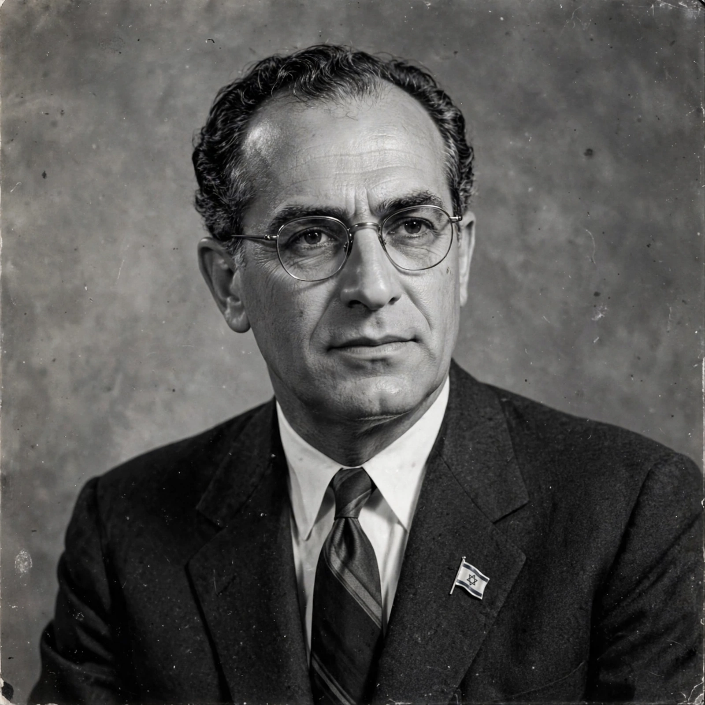

Aharon Zisling
From Wikipedia, the free encyclopedia
| Aharon Zisling | |
|---|---|
| Born | 26 February 1901, Minsk, Russian Empire |
| Died | 16 September 1964 (aged 63) |
| Office | Minister of Agriculture of Israel (1948–1949) |
| Party | Mapam |
Aharon Zisling (Hebrew: אהרן ציזלינג; 26 February 1901 – 16 September 1964) was an Israeli politician and a signatory of Israel's Declaration of Independence. He served as the country's first Minister of Agriculture in the provisional government of 1948–49.
Biography
Born in Minsk, then in the Russian Empire, Zisling immigrated to Mandatory Palestine in 1914. He was a founder of the youth movement of the Ahdut HaAvoda party and later of the socialist-Zionist Mapam party. He helped found kibbutz Ein Harod, where he lived for many years.

Zisling in the early 1950sPolitical career
Zisling was a member of the Jewish Agency executive and took part in the debates preceding statehood. As Minister of Agriculture in David Ben-Gurion's provisional government, he voiced strong moral objections during cabinet discussions in the 1948 war to the treatment of Arab civilians. He later served in the Knesset for Mapam and, after the 1954 split, for Ahdut HaAvoda.
Legacy
Zisling is remembered as one of the more outspoken conscience-driven voices in Israel's founding generation; streets in several Israeli cities bear his name.